Overview
Each person runs their own copy of this tool. You will:
- Create your own personal Slack app (about 5 minutes)
- Download the project to your Mac
- Add your Client ID to a config file
- Run a one-time Slack sign-in
- Install the background watcher (starts automatically at login)
Also available as a Word document: Zoom-Slack-Status-Setup-Guide.docx
Step 1: Create Your Slack App
Open a web browser and go to api.slack.com/apps. You will see a list of your existing apps (it may be empty). Click Create New App.
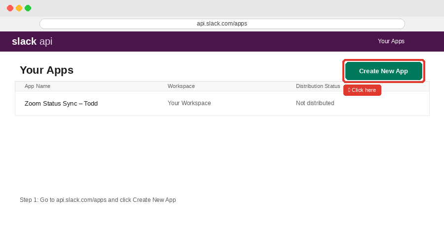
Choose “From scratch”
In the modal that appears, select From scratch.
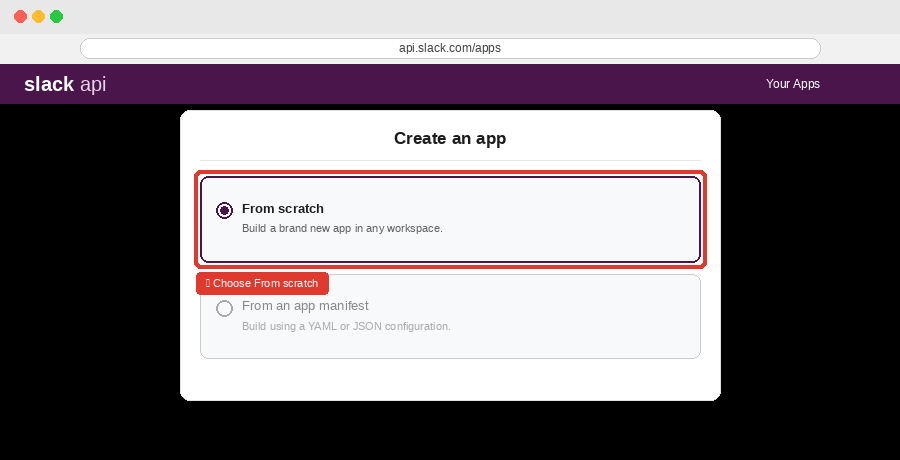
Name your app and choose a workspace
Give your app a personal name so you can identify it later. Include your name to keep it distinct from teammates’ apps:
Zoom Status Sync – Todd
Select your work Slack workspace from the dropdown and click Create App.
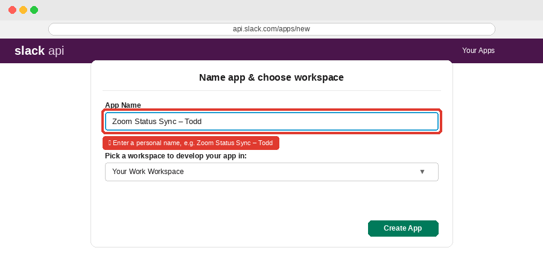
Add a redirect URL
In the left sidebar, click OAuth & Permissions. Scroll to Redirect URLs, click Add New Redirect URL, and paste exactly:
http://localhost:8765/slack/oauth/callback
Click Add, then Save URLs.
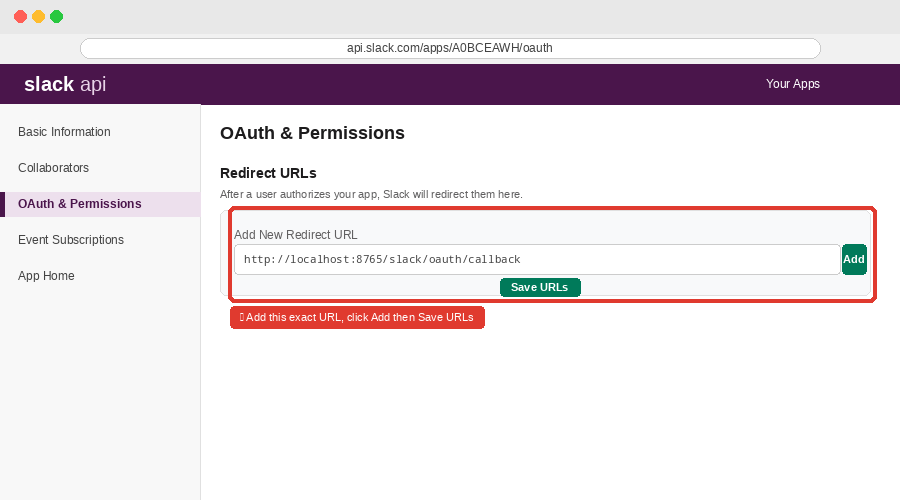
Enable PKCE
Still on OAuth & Permissions, find the PKCE section and turn it On. This app runs on your Mac and has no client secret, so PKCE is required.
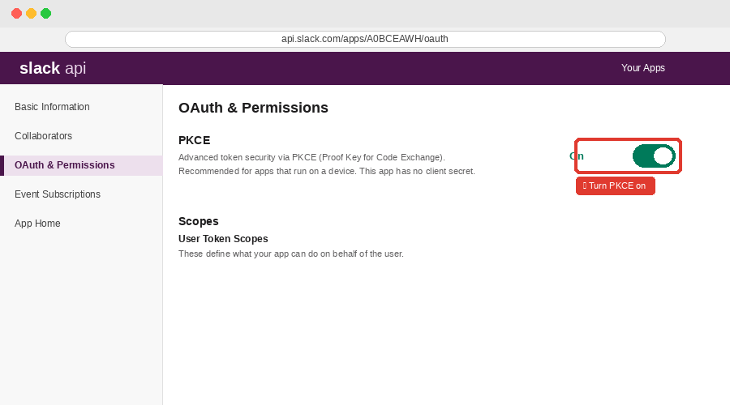
Add user token scopes
Scroll down to Scopes. Under User Token Scopes (not Bot Token Scopes), add both:
users.profile:readusers.profile:write
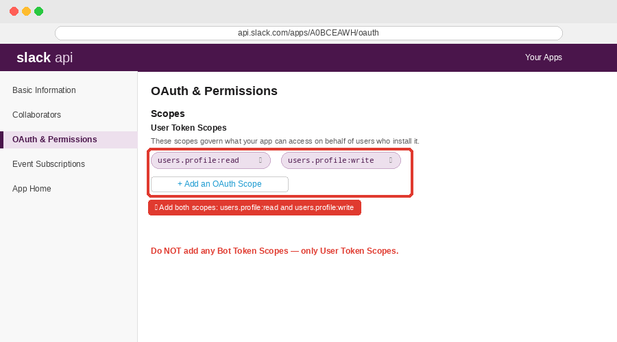
Opt in to token rotation (recommended)
On OAuth & Permissions, find Advanced token security via token rotation and click Opt In.
Copy your Client ID
In the left sidebar, click Basic Information. Scroll to App Credentials and find your Client ID. Click Copy — you will need it in Step 3.
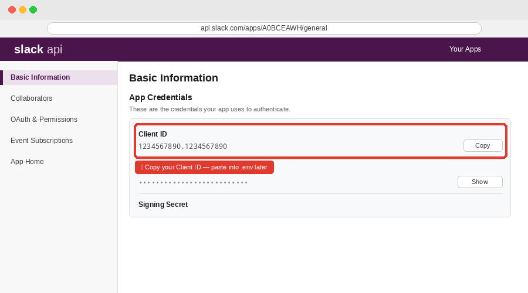
1234567890.1234567890. Keep it handy.Step 2: Download the Project
Open Terminal (Applications → Utilities → Terminal) and run these commands:
cd ~/Documents git clone https://github.com/uga-ool/zoom-slack-status.git cd zoom-slack-status
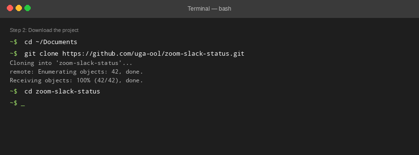
If macOS asks you to install Xcode Command Line Tools, click Install and then re-run the commands.
~/Documents/zoom-slack-status (Finder: Documents → zoom-slack-status).Step 3: Configure Your .env File
Still in Terminal (in ~/Documents/zoom-slack-status), run:
cp .env.example .env open -e .env
Files whose names start with . (like .env) are hidden in Finder by default. Press ⌘ Command + Shift + . in Finder to show or hide them.
TextEdit opens your config file. Find the SLACK_CLIENT_ID= line and paste your Client ID from Step 1 after the equals sign:
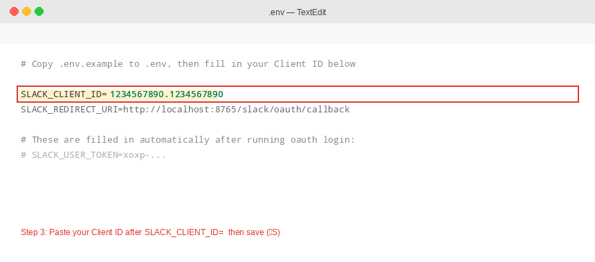
Save the file (⌘ Command + S) and close TextEdit.
Step 4: Connect Slack
Back in Terminal, run:
/usr/bin/python3 -m zoom_slack_status oauth login --env-file .env
Terminal opens Slack in your browser. Click Allow, then return to Terminal — you should see a success message.
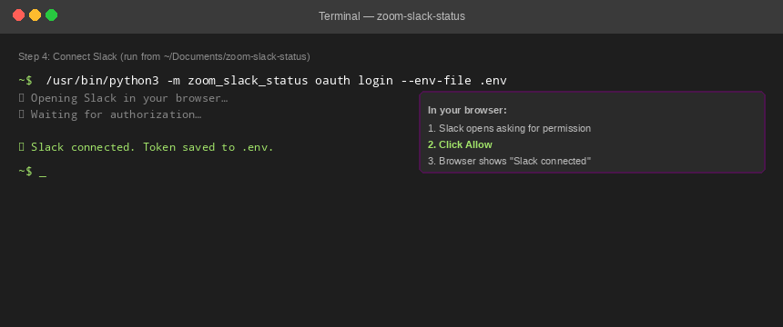
If it fails, double-check your redirect URL, PKCE setting, and scopes from Step 1, then run the command again.
Step 5: Install the Background Watcher
Run this final command from ~/Documents/zoom-slack-status:
/usr/bin/python3 -m zoom_slack_status launch-agent install --env-file .env
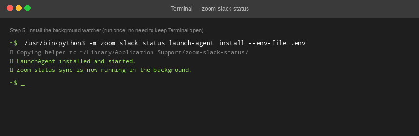
The watcher is now running in the background. You can close Terminal. It starts again automatically when you log in to your Mac.
Verify It’s Working
Join a Zoom test call and check your Slack status. To manually check what the watcher sees, run:
/usr/bin/python3 -m zoom_slack_status status --env-file .env
Troubleshooting
Status stopped updating after a few weeks
Token rotation may have expired your token. Re-run Steps 4 and 5:
cd ~/Documents/zoom-slack-status /usr/bin/python3 -m zoom_slack_status oauth login --env-file .env /usr/bin/python3 -m zoom_slack_status launch-agent install --env-file .env
Status takes too long to clear after leaving a call
Add this line to your .env file and reinstall the agent:
ZOOM_SLACK_IDLE_CONFIRMATIONS=2
View logs
~/Library/Logs/zoom-slack-status.log ~/Library/Logs/zoom-slack-status.err.log
Uninstall
/usr/bin/python3 -m zoom_slack_status launch-agent uninstall